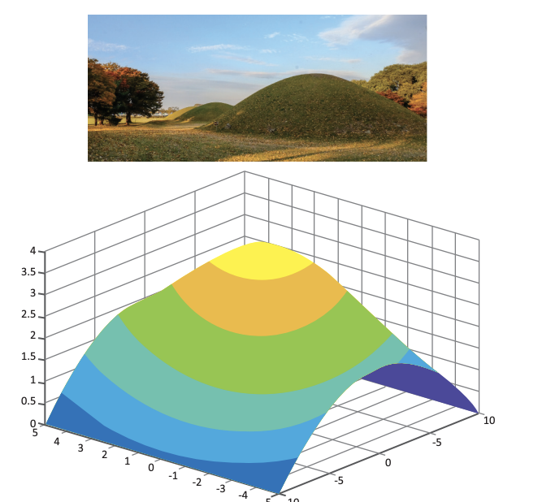

PROIECT - Modelare matematică în 3D
Ce veți face?
Realizarea unor obiecte tridimensionale virtuale, prin modelarea unor fracții algebrice.
De ce veți face?
Cu scopul de a observa cum vă ajută matematica să reprezentați diverse fenomene pe care le întâlniți în realitate.
Cum veți face?
- Intrați pe www.wolframalpha.com.
- Scrieți în caseta principală o expresie algebrică dependentă de două litere și apoi apăsați Enter.
- Studiați reprezentarea 3D obținută.
- Căutați cel puțin trei reprezentări, scrieți expresiile lor algebrice și oferiți o interpretare a acestor reprezentări (ce ar putea fi în realitate).
Cum veți ști că ați reușit?
Veți prezenta proiectul vostru, iar colegii din celelalte grupe vor face aprecieri și sugestii.
Ce se evaluează?
- Utilizarea fracțiilor algebrice pentru a obține o reprezentare 3D;
- Participarea tuturor membrilor grupului la căutarea informațiilor;
- Forma atractivă a desenelor sau imaginilor utilizate;
- Prezentarea clară a proiectului.
Fișa de laborator
- Veți face o fișă de laborator cu toate informațiile relevante.
- Se notează pașii de lucru cu explicații și se utilizează termeni științifici.
- Veți nota observațiile și concluziile voastre.
- Se menționează contribuția fiecărui membru al grupului.
Sugestii
-
Organizați-vă în grupuri de 1-2 colegi și stabiliți rolurile voastre.
-
Folosiți imagini și informații relevante pentru a prezenta toate obiectele care ne interesează.
-
Model: Movila 3D
- Movila poate fi reprezentată prin expresia algebrică:
